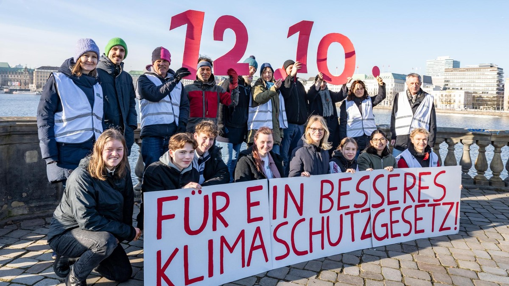

Nikolay, Owen, Tahseen
Die Bekämpfung des Klimawandels zählt zu den größten Herausforderungen des 21. Jahrhunderts. Soll Deutschland bereits bis 2040 klimaneutral werden, wären tiefgreifende Veränderungen nicht nur in der Innenpolitik, sondern auch in den internationalen Beziehungen notwendig. Da Deutschland stark von Energie-, Rohstoff- und Warenimporten abhängig ist, kann eine erfolgreiche Klimapolitik nur durch enge Zusammenarbeit mit anderen Staaten gelingen. Klimaneutralität wäre somit nicht nur ein ökologisches und wirtschaftliches Projekt, sondern auch eine zentrale außenpolitische Aufgabe.

Deutschland verfügt nur über begrenzte eigene Rohstoffvorkommen und kann seinen Energiebedarf nicht vollständig aus heimischen Quellen decken. Während in der Vergangenheit vor allem Öl-, Kohle- und Gasimporte die Außenpolitik beeinflussten, würden künftig erneuerbare Energien, Wasserstoff und kritische Rohstoffe im Mittelpunkt stehen. Die deutsche Außenpolitik müsste sich daher stärker auf die Sicherung nachhaltiger Energiequellen, den Aufbau neuer Handelsbeziehungen und die Förderung internationaler Klimaschutzmaßnahmen konzentrieren.
Eine Klimaneutralität bis 2040 wäre ohne eine deutlich engere Zusammenarbeit innerhalb Europas kaum erreichbar. Mit dem steigenden Anteil von Wind- und Solarenergie wird ein grenzüberschreitendes Stromnetz immer wichtiger. Deshalb gilt der Aufbau eines europäischen „Supergrids“ als zentrale Voraussetzung für die Energiewende. Ein solches Netz würde die Strommärkte der Mitgliedstaaten stärker verbinden und ermöglichen, Erzeugungsspitzen sowie Engpässe zwischen den Ländern auszugleichen. Windstrom aus der Nordsee, Solarstrom aus Südeuropa und Wasserkraft aus anderen europäischen Regionen könnten dadurch effizienter genutzt werden. Besonders wichtig wäre die Zusammenarbeit mit Ländern wie Frankreich, Niederlande, Dänemark, Spanien und Österreich.
Da Deutschland seinen Energiebedarf nicht vollständig selbst decken kann, wird grüner Wasserstoff eine wichtige Rolle spielen. Dieser kann insbesondere in der Industrie und im Schwerlastverkehr fossile Energieträger ersetzen. Dafür wären langfristige Energiepartnerschaften notwendig. Länder wie Norwegen, Spanien, Marokko, Namibia und Australien könnten zu wichtigen Lieferanten von grünem Wasserstoff werden. Der Aufbau einer globalen Wasserstoff-Diplomatie wäre daher nicht nur für die Versorgungssicherheit entscheidend, sondern auch für den Erhalt einer klimaneutralen und wettbewerbsfähigen Industrie.
Neben Energie benötigt die Energiewende große Mengen an Rohstoffen wie Lithium, Nickel, Kobalt, Kupfer und Seltenen Erden. Diese sind unverzichtbar für Batterien, Elektromotoren, Windkraftanlagen und Stromnetze. Eine starke Abhängigkeit von einzelnen Lieferländern stellt jedoch ein strategisches Risiko dar. Deshalb müsste Deutschland seine Lieferketten breiter aufstellen und Rohstoffe aus verschiedenen Regionen beziehen. Wichtige Partner könnten dabei Chile, Australien, Kanada, Indonesien und die Demokratische Republik Kongo sein. Gleichzeitig würden Nachhaltigkeits- und Menschenrechtsstandards bei internationalen Handelsbeziehungen an Bedeutung gewinnen.
Da der Klimawandel ein globales Problem ist, reicht nationale Klimaneutralität allein nicht aus. Deutschland müsste sich weiterhin aktiv an internationalen Klimaverhandlungen beteiligen und andere Staaten beim Ausbau erneuerbarer Energien unterstützen. Dazu gehören Klimafinanzierung, Technologietransfer und die Förderung internationaler Klimaschutzabkommen. Klimaschutz würde damit zu einem festen Bestandteil der Außen- und Sicherheitspolitik werden.
Fazit
Eine Klimaneutralität Deutschlands bis 2040 würde eine grundlegende Neuausrichtung der Außenpolitik erfordern. Im Mittelpunkt stünden ein europäisches Supergrid, internationale Wasserstoffpartnerschaften und diversifizierte Rohstofflieferketten. Gleichzeitig müsste Deutschland seine Rolle in der globalen Klimadiplomatie stärken. Der Erfolg einer klimaneutralen Zukunft hängt deshalb nicht nur von technologischen Fortschritten im Inland ab, sondern vor allem von einer engen und langfristigen Zusammenarbeit mit Partnern in Europa und der Welt.